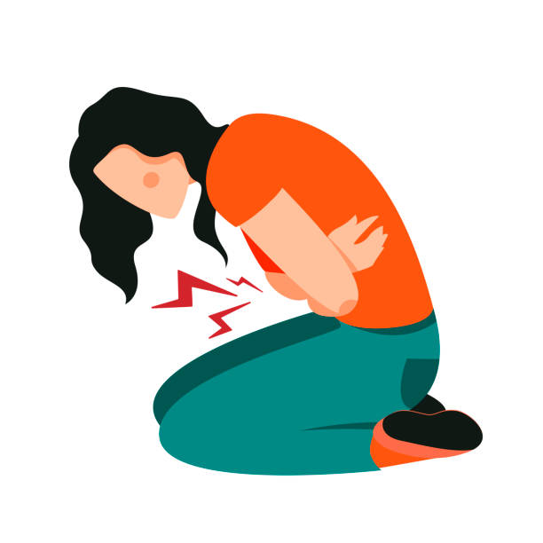

On July 28th 2018, Quinn, age 16 made her way to downtown Boston to see one of her favorite bands, Arctic Monkeys, in concert. Before going to the concert, she and her mom decided to get a light dinner of southern biscuits near the venue. What makes this experience different from other dining experiences that Quinn has had is that she was on her period. Her periods have always been heavy to the point where she had to hide her pants with a sweater because she bled through and even skipped school because of pain and nausea. While these two factors seem unrelated at first, they dictated the rest of the night for Quinn. As Quinn sat down to eat, she felt an immense amount of pain in her stomach. Throughout her dining experience, because of her pain, Quinn had to excuse herself from the table 3 times to throw up in the restroom. After this experience Quinn knew that it was time to reach out to her OB-GYN to discuss treatment options to better regulate her period and nausea. From here, Quinn started her journey on choosing what birth control type was right for her and her body. After much contemplation, Quinn decided to try out Nexplanon, which is a surgical based birth control.
Anika: How would you describe what Nexplanon is?
Quinn: I would describe Nexplanon as an implant based birth control. It is a bendy silicon rod that was surgically implanted in my arm.
Anika: How was the procedure for getting the implant in your arm?
Quinn: I first went over everything in detail about the procedure with my OB-GYN but I'll make a brief summary about it. So essentially what the doctor does is numb your arm, then they make an incision on the inside of your arm where they then take a Nexplanon applicator to slip the tube into your arm.
Anika: What was the recovery process like?
Quinn: Because my arm was numbed there was little to no pain. After the procedure there was bruising down my arm near the incision but it slowly went away.
The Nexplanon implant works by releasing a hormone that stops an egg from being released from your ovary and prevents sperm from reaching the egg. It is over 99% effective as the pill and lasts 3 years without any additional dosing. So why did Quinn decide to go on Nexplanon, and what other birth control methods did she try?
Anika: Why did you decide to go on Nexplanon, were there any medical issues associated with your decision?

Quinn: Before Nexplanon, I would have intense and sharp cramps before and during my period. My flow was insanely heavy and overall really painful, I would sometimes puke because of the pain.
Anika: How did your period change from before being on Nexplanon to after?
Quinn: After being on Nexplanon, my period actually stopped for about 2 ½ years. I only just started getting my period again but the flow is super light, I only need to use a panty liner.
Anika: Did you try or think about trying any other forms of birth control?
Quinn: I did think about trying other forms of birth control, but an IUD was too invasive for me and the patch was too visible. In terms of the pill, I tried three types, but each pill made my nausea worse which I later found out was due to an increase in estrogen.
Quinn’s journey with finding the right type of birth control was difficult, she tried many different types of birth control in order to control her period. An important detail in this story is that Quinn was not using birth control for preventing pregnancy, but to regulate periods and their effects such as cramps and nausea. help with her periods. A point that Quinn worked to emphasize during her interview was that many people assume that birth control is used solely to prevent pregnancies, but is actually also used for regulating periods, reducing cramps/period pain, and even regulating acne. It is important to acknowledge this, especially from Quinn’s perspective, because many people try to argue that birth control is not necessary, which is not the case.
Anika: How do you feel about the new restrictions on birth control, abortions, and planned parenthood?
Quinn: I am a huge advocate for accessible birth control for women, especially after my experience. Birth control has to become more accessible because it is not just used for preventing pregnancies, but helps women with many other period related issues. Everyone, no matter what situation you’re in, if you don’t identify as a female but you have a period and you want to stop it, if you’re low income, we need to make birth control more accessible. Services at places like Planned Parenthood need to become more recognized in communities in order to increase the accessibility to services such as STD testing, abortions, and birth control. If the amount of places that offer these services start to increase, then these places can become staples within communities.
After hearing Quinn’s story, two points should be clear: Birth control has different uses other than preventing pregnancy and finding the right type of birth control takes time. The pain from periods varies from woman to woman, but birth control can be used to regulate heavy periods and alleviate pain caused by periods. It is important to acknowledge that the journey of choosing the right type of birth control has many trials and errors. In Quinn’s case, she tried three different types of the pill and each type made her pain and nausea worse due to an increase in estrogen. Before trying birth control though, Quinn tried over the counter medications like ibuprofen but those medications proved not to be strong enough to help Quinn with cramps and nausea. Once she started using Nexplanon, she knew that she chose the right type of birth control because she started to experience more manageable periods with less nausea and pain. Currently, Quinn is experiencing much more regular periods and little to no period cramps and nausea. She loves being on Nexplanon because it allows her to live a more pain and sickness free life. Quinn strongly recommends anyone who is experiencing anything close to what she has had to experience, to talk to a doctor or local health care provider about finding the right type of birth control for your body to regulate any menstrual issues you may be having. Nexplanon was the right treatment option for Quinn.
Credit: This is Quinn’s HerStory as told to Anika Kumar, first year student studying Public Health at American University. (October 2021).
This article first appeared on the IAWH Health blog on June 15, 2022 and is preserved here as part of the IAWH Health Journal archive. Information reflects what was known at the time of publication. This article is for general education and is not medical advice.